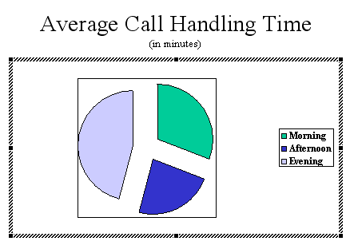
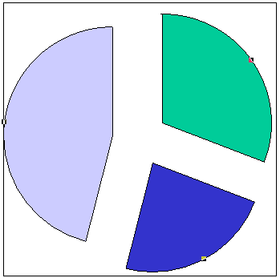
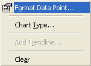
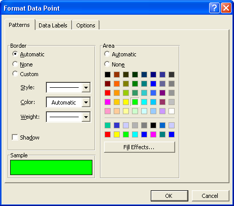
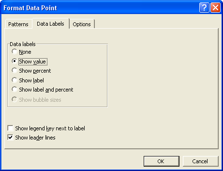
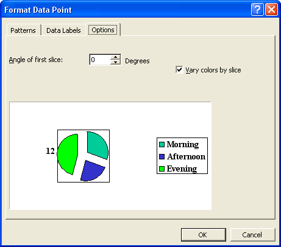
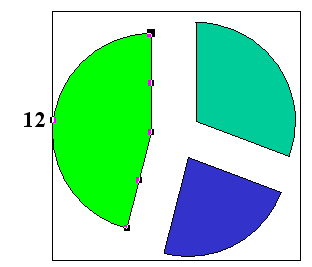
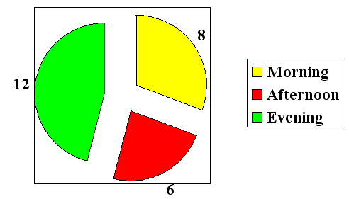
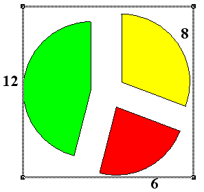
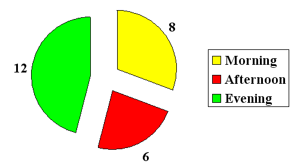

Free
powerpoint
Tutorials
|
Free
powerpoint
Tutorials
|
|
 home home |
Stay at Home and Learn | ||||
Pie Chart Segments in PowerPoint |
|||||
|
Charts 1, 2, 3, 4, 5, 6, 7, 8, 9, 10, 11, 12 Flow Charts Tables
Your chart from the previous page should now look like this:  To format the segments of the Pie chart, select them by clicking on any of the three. You should see black squares appear on the outside of each segment:  Because each of the three segments has a black square on the outside, it means that the whole Pie chart is selected. If you tried to change the colour, it would give you the same colour for all three segments. To format just one segment at a time, you need to click a segment again. Click the light blue one to select just this segment. The light blue segment is now the only one selected. You can tell this because it is the only one with black squares around the edges. When your light blue segment looks like this, right click on it. You'll see the following context menu:  When you see that menu, select Format Data Point. You'll then get another dialogue box popping up. This one:  Click on any of the colours on the right hand side. We've gone for green for this segment. But you could have a Fill Effect, if you wanted. Click the button and explore the various fill options. But we've met these before. When you're happy with your colour or Fill Effect, click the Data Labels tab at the top. The dialogue box will change to this:  Select the option Show value, as in the image above. This will put the numbers on the outside of the segment. If you want to rotate your Pie chart, click on the Options tab.  Click the Degrees arrows to rotate your chart (we haven't rotated ours). When you're done, click on OK. Your Pie chart should now look like ours:  Notice that the segment has turned green, and that the number 12 is beside it. Do the same for the other two segments: select each one individually, right click and select Format Data Point from the menu. We've selected yellow and red for the other two colours. Don't forget to click on the Data Labels tab and choose Show value from the list of options. When you're finished, your chart should look something like ours:  The thing you might want to get rid of is that black border surrounding the segments. Two of the numbers are outside of the border, and one inside. To get rid of the black border, click anywhere on the border itself. This will select it:  When you can see the same shaded lines as above, hit the delete key on your keyboard. The lines will vanish: 
And that's it for the Pie Chart. Press F5 to see what your slide show looks like so far. In the next part, you'll learn how to add a 2D bar chart.
|
||||